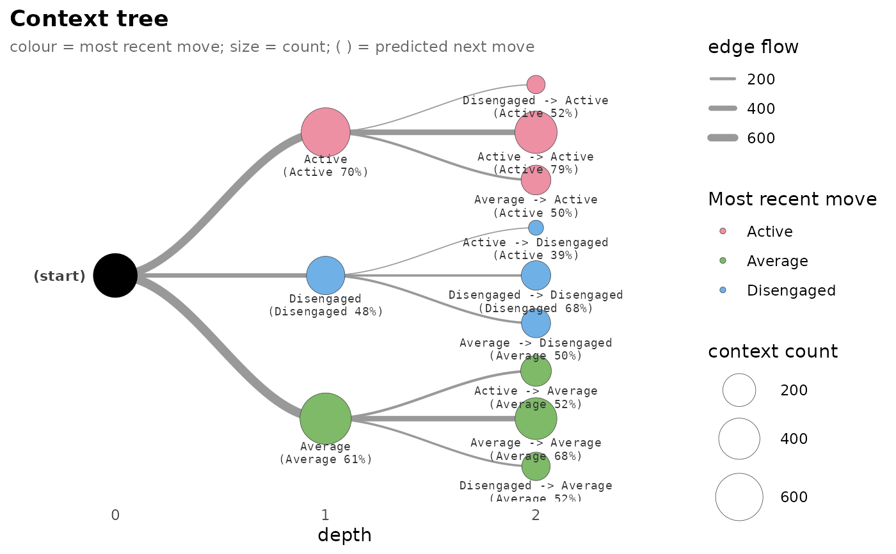
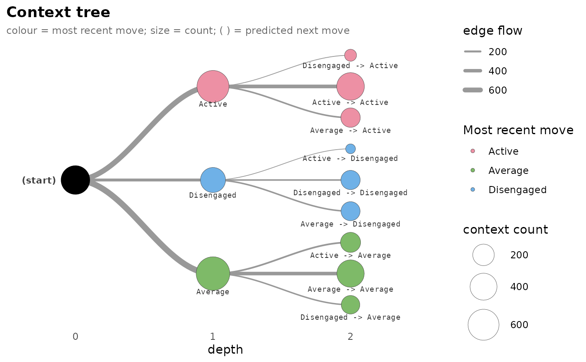
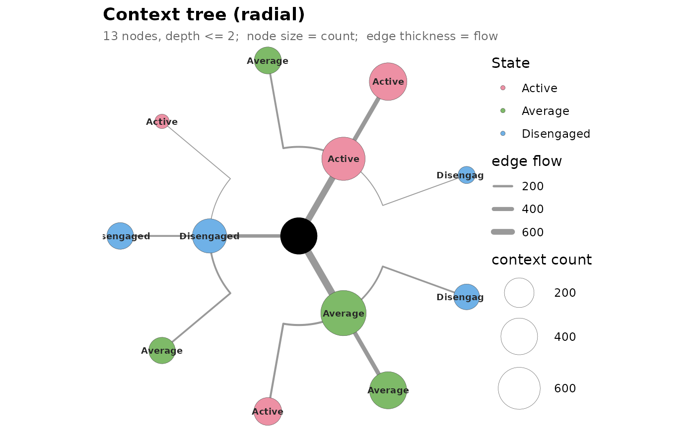
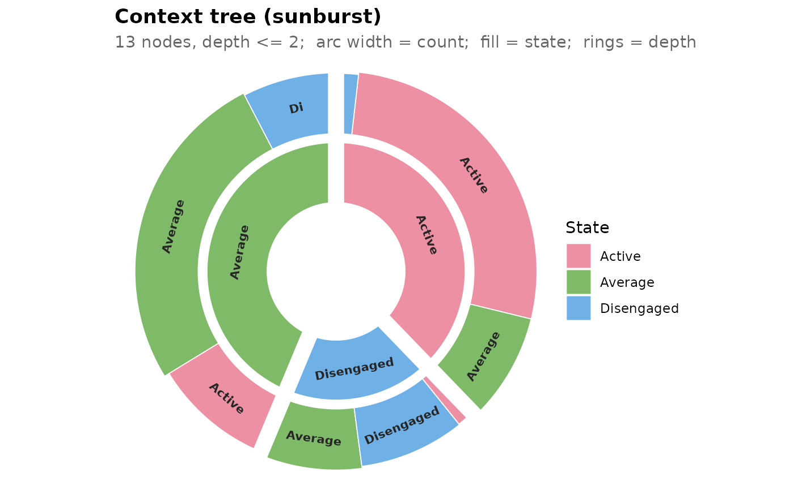

plot() draws a fitted context tree. A context tree organizes the
histories that precede each state: the root holds the overall distribution of
states; each child extends its parent's history by one earlier state; and
every node carries the distribution of the next state given that history. A
drawing of the tree shows which histories occur often enough to be modeled,
how far back the model's memory reaches along each branch, and where branches
stop because a longer history was too rare or, after pruning, added nothing
to the prediction.
Four drawings are available. "horizontal" (the default) is a
left-to-right tree with depth on the x-axis; each node is labeled with its
full history and, by default, its most likely next state and that state's
probability, and is filled by the most recent state of the history.
"dendrogram" is a radial tree with the root at the center, each node
filled by the state its depth adds to the history. "icicle" is a
sunburst: rings are depths, the angular width of an arc is proportional to
the summed count of the deepest histories beneath it, and the fill is the
state the ring adds to the history. "interactive" is a
visNetwork widget with draggable nodes and a tooltip that gives each
node's count and full next-state distribution. In the node-link drawings,
node size is the count of the history and edge width the count of the child
history. The first three drawings are ggplot objects; the interactive one is
an htmlwidget.
The context tree reads backwards in time: every history ends at the
moment of prediction. For the forward view, sequences followed from
their first state, use plot_trajectories(). The
next-state probabilities of many pathways are compared more easily in
plot_pathways() or plot_distributions(),
and differences between two groups in plot_difference().
Arguments
- x
A
transitiontreesobject.- style
"horizontal"(default),"dendrogram","icicle"or"interactive".- point_size_range
Smallest and largest node size. Default
NULL:c(4, 14)for"horizontal",c(5, 16)for"dendrogram",c(10, 45)pixels for"interactive". Not used by"icicle".- edge_size_range
Thinnest and thickest edge. Default
NULL:c(0.3, 2.5)for the static drawings,c(1, 10)pixels for"interactive". Not used by"icicle".- ...
Options of the chosen drawing.
"horizontal":show_prediction(defaultTRUE) adds the most likely next state to each label."icicle":label_min_fraction(default 0.03) andlabel_abbrev_fraction(default 0.08), the arc shares below which a label is omitted or abbreviated;abbrev_len(default 2) orabbrev_fun(defaultNULL) for the abbreviation;gap_size(default 5) andgap_size_within(default 0.3), the widths of the white lines between first-level wedges and between arcs;jitter(default 0.04) andjitter_seed(default 1), a small random variation of the outer edge (0 for none)."interactive":widthandheightof the widget.
Value
A ggplot object for "horizontal", "dendrogram"
and "icicle"; a visNetwork htmlwidget for
"interactive".
Conditions
transitiontrees_empty_result(error) the tree has no nodes.
transitiontrees_missing_package(error)
"interactive"without the visNetwork package installed.
See also
plot.transitiontrees_group for one plot per
group; plot_trajectories() for the forward tree;
plot_pathways(), plot_distributions() and
plot_pruning() for next-state distributions.
Examples
tree <- context_tree(trajectories, max_depth = 2)
plot(tree)

plot(tree, show_prediction = FALSE)

plot(tree, style = "dendrogram")

plot(tree, style = "icicle")

if (requireNamespace("visNetwork", quietly = TRUE)) {
widget <- plot(tree, style = "interactive")
}